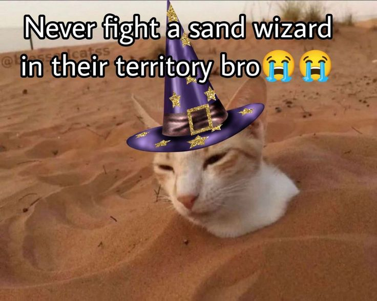

You have spotted the wizard.

CatWizard69: Greetings, traveller. Welcome to the city of Catastrophy. I see you have embarked on your journey to find the treasure of Catalysts.
You:...
CatWizard69: AH! I see. So you would like me to accompany you on this trecharous journey for everyone's safety.
You: (Select dialogue.)